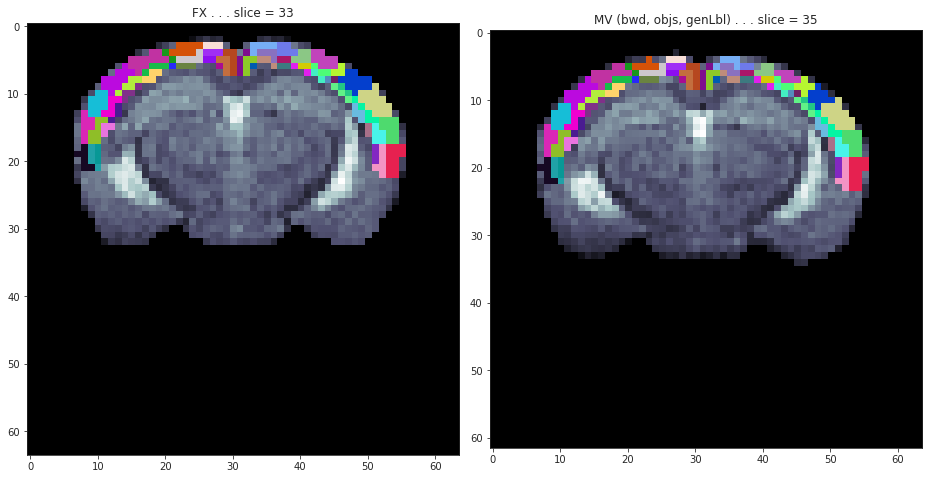

Jan 4th, 2022 (Coreg ses)¶
Motivation: Co-register 3 sessions together: finalize.
# HIDE CODE
import os
import sys
import nibabel as nib
import networkx as nx
from time import time
from pprint import pprint
from copy import deepcopy as dc
from os.path import join as pjoin
from myterial import orange, blue_grey
from IPython.display import display, IFrame, HTML
from matplotlib.colors import rgb2hex, to_rgb
import matplotlib.pyplot as plt
import seaborn as sns
# set style & no interpolalation
import matplotlib
matplotlib.rcParams['image.interpolation'] = 'none'
sns.set_style('whitegrid')
%matplotlib inline
# tmp & extras dir
git_dir = pjoin(os.environ['HOME'], 'Dropbox/git')
tmp_dir = pjoin(git_dir, 'jb-Ca-fMRI/tmp')
extras_dir = pjoin(git_dir, 'jb-Ca-fMRI/_extras')
lfr_dir = pjoin(os.environ['HOME'], 'Documents/workspaces/lfr/binary_overlapping')
# GitHub
sys.path.insert(0, pjoin(git_dir, '_Ca-fMRI'))
from register.atlas import make_tree_graph
from register.parcellation import Parcellation
from analysis.hierarchical import Hierarchical
from analysis.fourier import *
from analysis.bootstrap import *
from analysis.svinet import *
from analysis.group import *
from analysis.lfr import *
from utils.render import *
from utils.plotting import *
from model.mouse import Mice
from model.configuration import Config
# warnings
import warnings
warnings.filterwarnings('ignore', category=DeprecationWarning)
# HIDE CODE
def _coronal(key, obj, t1w, figsize=(13.5, 16)):
slices = range(21, 66, 4)
fig, axes = create_figure(4, 3, figsize)
for i, idx in enumerate(slices):
ax = axes.flat[i]
x2plt = np.ma.masked_where(~obj.astype(bool), obj)
ax.imshow(t1w[..., idx].T, cmap='bone')
ax.imshow(x2plt[..., idx].T, alpha=1.0, cmap=cmap)
ax.set_title(f"slice #{idx}")
sup = fig.suptitle(f"{key} . . . Coronal", fontsize=17, y=1.02)
remove_ticks(axes)
plt.close()
return fig, sup
def _sagittal(key, obj, t1w, figsize=(13.5, 12)):
slices = range(2, 48, 4)
fig, axes = create_figure(4, 3, figsize)
for i, idx in enumerate(slices):
ax = axes.flat[i]
x2plt = np.ma.masked_where(~obj.astype(bool), obj)
ax.imshow(t1w[idx], cmap='bone')
ax.imshow(x2plt[idx], alpha=1.0, cmap=cmap)
ax.set_title(f"slice #{idx}")
sup = fig.suptitle(f"{key} . . . Sagittal", fontsize=17, y=1.02)
remove_ticks(axes)
plt.close()
return fig, sup
def _axial(key, obj, t1w, figsize=(13.5, 13)):
slices = range(2, 25, 2)
fig, axes = create_figure(4, 3, figsize)
for i, idx in enumerate(slices):
ax = axes.flat[i]
x2plt = np.ma.masked_where(~obj.astype(bool), obj)
ax.imshow(t1w[:, idx, :], cmap='bone')
ax.imshow(x2plt[:, idx, :], alpha=1.0, cmap=cmap)
ax.set_title(f"slice #{idx}")
sup = fig.suptitle(f"{key} . . . Axial", fontsize=17, y=1.02)
remove_ticks(axes)
plt.close()
return fig, sup
mice = Mice((64, 0, 100), load_parcel=True, load_allen=True, full_load=True)
ROI lookup not found, time to run organize_func() . . .
combine metadata not found, time to run cat_data() . . .
# Get stuff from Parcel
cortex = mice.parcel['cortex']
regions = cortex[cortex.nonzero()]
regions = np.unique(regions)
hcl = mice.parcel.decode(regions)
# Random CMAP
rng = get_rng()
num = len(mice.parcel['regions-cortex'])
colors = (
rng.choice(256, size=num) / 256,
rng.choice(256, size=num) / 256,
rng.choice(256, size=num) / 256,
)
colors = list(zip(*colors))
colors = [rgb2hex(c) for c in colors]
cmap = make_cmap(
ramp_colors=colors,
name='random_cmap',
n_colors=num,
show=False,
)
—¶
# HIDE CODE
obj_files = sorted([
str(e) for e in
pathlib.Path(mice.cfg.masks_dir).rglob('*_cortex.nii.gz*')
])
objs, t1ws, masks = {}, {}, {}
for key, anat in mice.T1w.items():
file = next(
f for f in obj_files
if key in f
)
objs[key] = ants.image_read(
pjoin(mice.cfg.masks_dir, file),
pixeltype='unsigned int',
).numpy()
t1ws[key] = anat.load_ants().numpy()
masks[key] = mice.mask3d[key].load_ants().numpy()
fig, axes = create_figure(3, 3, (13.5, 12))
keys = ['sub-SLC10_ses-1', 'sub-SLC10_ses-2', 'sub-SLC10_ses-3']
slices = [18, 10, 35]
for j, slice_idx in enumerate(slices):
for i, ax in enumerate(axes[j].flat):
x2plt = np.take(t1ws[keys[i]], slice_idx, axis=j)
if j == 2:
x2plt = x2plt.T
ax.imshow(x2plt, cmap='bone')
fig, axes = create_figure(1, 3, (13.5, 12))
slices = [35, 33, 33]
for i, ax in enumerate(axes.flat):
m = np.take(masks[keys[i]], slices[i], axis=2)
x2plt = np.take(t1ws[keys[i]], slices[i], axis=2)
x2plt = np.ma.masked_where(~m.astype(bool), x2plt)
x2plt = x2plt.T
ax.imshow(x2plt, cmap='bone')
ax.set_title(f"{keys[i]} . . . slice {slices[i]}", fontsize=14)
from register.register import reset_ants_img
x1 = mice.T1w[keys[0]].load_ants() * mice.mask3d[keys[0]].load_ants()
x2 = mice.T1w[keys[1]].load_ants() * mice.mask3d[keys[1]].load_ants()
x3 = mice.T1w[keys[2]].load_ants() * mice.mask3d[keys[2]].load_ants()
x1
ANTsImage (RAI) Pixel Type : float (float32) Components : 1 Dimensions : (64, 64, 78) Spacing : (0.2, 0.2, 0.2) Origin : (6.4, -6.2, -7.8) Direction : [1. 0. 0. 0. 1. 0. 0. 0. 1.]
plt.imshow(x1.mean(-1) - x2.mean(-1))
plt.colorbar()
<matplotlib.colorbar.Colorbar object at 0x7e517175d610>
base_mi = ants.image_mutual_information(x1, x1)
mi = ants.image_mutual_information(x1, x2)
mi /= base_mi
mi
0.34755291933960414
txfile = ants.affine_initializer(
fixed_image=x1,
moving_image=x2,
search_factor=5,
)
tx_aff = ants.read_transform(
filename=txfile, dimension=3)
x2_aff = tx_aff.apply_to_image(
image=x2,
reference=x1,
interpolation='linear',
)
mi = ants.image_mutual_information(
image1=x2_aff, image2=x1)
mi /= base_mi
mi
0.7658809405219725
txfile = ants.affine_initializer(
fixed_image=x1,
moving_image=x3,
search_factor=5,
)
tx_aff = ants.read_transform(
filename=txfile, dimension=3)
x3_aff = tx_aff.apply_to_image(
image=x3,
reference=x1,
interpolation='linear',
)
mi = ants.image_mutual_information(
image1=x3_aff, image2=x1)
mi /= base_mi
mi
0.7697679795295318
tx = ants.registration(
fixed=x1,
moving=x2,
type_of_transform='Rigid',
random_seed=0,
verbose=False,
)
x2_rig = tx.get('warpedmovout', None)
mi = ants.image_mutual_information(
image1=x2_rig, image2=x1)
mi /= base_mi
mi
0.7746771905032178
tx = ants.registration(
fixed=x1,
moving=x3,
type_of_transform='Rigid',
random_seed=0,
verbose=False,
)
x3_rig = tx.get('warpedmovout', None)
mi = ants.image_mutual_information(
image1=x3_rig, image2=x1)
mi /= base_mi
mi
0.7772961447061221
fig, axes = create_figure(2, 3, (13.5, 9))
slices = [35, 33, 33]
x2plt = x1[..., slices[0]].T
axes[0, 0].imshow(x2plt, cmap='bone')
x2plt = x2[..., slices[1]].T
axes[0, 1].imshow(x2plt, cmap='bone')
x2plt = x3[..., slices[2]].T
axes[0, 2].imshow(x2plt, cmap='bone')
axes[0, 0].set_title(f"x1 . . . slice {slices[0]}", fontsize=15)
axes[0, 1].set_title(f"x2 . . . slice {slices[1]}", fontsize=15)
axes[0, 2].set_title(f"x2 . . . slice {slices[2]}", fontsize=15)
x2plt = x1[..., slices[0]].T
axes[1, 0].imshow(x2plt, cmap='bone')
x2plt = x2_aff[..., slices[0]].T
axes[1, 1].imshow(x2plt, cmap='bone')
x2plt = x3_aff[..., slices[0]].T
axes[1, 2].imshow(x2plt, cmap='bone')
axes[1, 0].set_title(f"x1 . . . slice {slices[0]}", fontsize=15)
axes[1, 1].set_title(f"x2 aff . . . slice {slices[0]}", fontsize=15)
axes[1, 2].set_title(f"x2 aff . . . slice {slices[0]}", fontsize=15)
plt.show()
fig, axes = create_figure(2, 3, (13.5, 9))
slices = [35, 33, 33]
x2plt = x1[..., slices[0]].T
axes[0, 0].imshow(x2plt, cmap='bone')
x2plt = x2[..., slices[1]].T
axes[0, 1].imshow(x2plt, cmap='bone')
x2plt = x3[..., slices[2]].T
axes[0, 2].imshow(x2plt, cmap='bone')
axes[0, 0].set_title(f"x1 . . . slice {slices[0]}", fontsize=15)
axes[0, 1].set_title(f"x2 . . . slice {slices[1]}", fontsize=15)
axes[0, 2].set_title(f"x3 . . . slice {slices[2]}", fontsize=15)
x2plt = x1[..., slices[0]].T
axes[1, 0].imshow(x2plt, cmap='bone')
x2plt = x2_rig[..., slices[0]].T
axes[1, 1].imshow(x2plt, cmap='bone')
x2plt = x3_rig[..., slices[0]].T
axes[1, 2].imshow(x2plt, cmap='bone')
axes[1, 0].set_title(f"x1 . . . slice {slices[0]}", fontsize=15)
axes[1, 1].set_title(f"x2 rig . . . slice {slices[0]}", fontsize=15)
axes[1, 2].set_title(f"x3 rig . . . slice {slices[0]}", fontsize=15)
plt.show()
Register CCF –> Indiv (10x)¶
Followed by 2x intra-session rigid transformations
from register.register import Register
reg = Register(mice)
save_results = False
ses_fx = 2
obj_all = {}
for sub in tqdm(mice.cfg.sub_ids):
key_fx = mice.get_key(sub, ses_fx)
fx = mice.T1w[key_fx].load_ants()
fx *= mice.mask3d[key_fx].load_ants()
fx_prep = reg._prepare(fx)
base_mi = ants.image_mutual_information(
image1=fx, image2=fx)
# Load or perform CCF --> Selected ses
tx, tx_aff = reg.load_tx(key_fx)
if not tx:
results = reg.fit_register(
name=key_fx,
moving=fx_prep,
fixed=reg.nissl,
save_results=True,
)
tx, tx_aff = reg.load_tx(key_fx)
affined = tx_aff.apply_to_image(
image=fx_prep,
reference=reg.nissl,
interpolation='linear',
)
obj = reg._apply_tx_obj2lps(
name=key_fx,
moving=affined,
moving_orig=fx_prep,
tx_aff=tx_aff,
tx=tx,
use_mm=True,
save_results=save_results,
)
obj_all[key_fx] = obj
for ses_mv in [j for j in mice.cfg.ses_ids if j != ses_fx]:
key_mv = mice.get_key(sub, ses_mv)
mv = mice.T1w[key_mv].load_ants()
mv *= mice.mask3d[key_mv].load_ants()
tx_rig = ants.registration(
fixed=mv,
moving=fx,
type_of_transform='Rigid',
verbose=False,
)
obj_all[key_mv] = {
k: ants.apply_transforms(
fixed=mv,
moving=o,
transformlist=tx_rig['fwdtransforms'],
interpolator='genericLabel',
) for k, o in obj.items()
}
mi = ants.image_mutual_information(
image1=fx, image2=tx_rig['warpedfixout'])
mi /= base_mi
print(f"sub = {sub} . . . ses_fx/mv = {ses_fx}/{ses_mv} \t perf = {mi}")
print('\n')
obj_all = dict(sorted(obj_all.items()))
sub = 1 . . . ses_fx/mv = 2/1 perf = 0.7968628815868392
sub = 1 . . . ses_fx/mv = 2/3 perf = 0.8258243976515193
sub = 2 . . . ses_fx/mv = 2/1 perf = 0.7800316441171055
sub = 2 . . . ses_fx/mv = 2/3 perf = 0.8042559050819308
sub = 3 . . . ses_fx/mv = 2/1 perf = 0.7536336654672691
sub = 3 . . . ses_fx/mv = 2/3 perf = 0.7756027695282671
sub = 4 . . . ses_fx/mv = 2/1 perf = 0.7710058552891859
sub = 4 . . . ses_fx/mv = 2/3 perf = 0.7953963465172205
sub = 5 . . . ses_fx/mv = 2/1 perf = 0.7702397617058426
sub = 5 . . . ses_fx/mv = 2/3 perf = 0.7773317491692263
sub = 6 . . . ses_fx/mv = 2/1 perf = 0.7923353583358841
sub = 6 . . . ses_fx/mv = 2/3 perf = 0.8071429385684435
sub = 7 . . . ses_fx/mv = 2/1 perf = 0.7138550847873283
sub = 7 . . . ses_fx/mv = 2/3 perf = 0.7575573553496735
sub = 8 . . . ses_fx/mv = 2/1 perf = 0.7124249984166391
sub = 8 . . . ses_fx/mv = 2/3 perf = 0.7602479932715267
sub = 9 . . . ses_fx/mv = 2/1 perf = 0.7486791417606709
sub = 9 . . . ses_fx/mv = 2/3 perf = 0.7875937304606342
sub = 10 . . . ses_fx/mv = 2/1 perf = 0.7649695947384124
sub = 10 . . . ses_fx/mv = 2/3 perf = 0.9481306485344245
sub = 4
key_fx = mice.get_key(sub, ses_fx)
fx = mice.T1w[key_fx].load_ants()
fx *= mice.mask3d[key_fx].load_ants()
ses_mv = 3
key_mv = mice.get_key(sub, ses_mv)
mv = mice.T1w[key_mv].load_ants()
mv *= mice.mask3d[key_mv].load_ants()
tx_rig = ants.registration(
fixed=mv,
moving=fx,
type_of_transform='Rigid',
verbose=False,
)
mv_rig = tx_rig['warpedfixout']
fig, axes = create_figure(1, 3, (13, 5))
ii = 33
axes[0].imshow(fx[..., ii].T, cmap='bone')
x2plt = np.ma.masked_where(
obj_all[key_fx]['misc'][..., ii] == 0,
obj_all[key_fx]['misc'][..., ii]
)
axes[0].imshow(x2plt.T, cmap=cmap)
axes[0].set_title('FX')
axes[1].imshow(mv_rig[..., ii].T, cmap='bone')
x2plt = np.ma.masked_where(
obj_all[key_fx]['misc'][..., ii] == 0,
obj_all[key_fx]['misc'][..., ii]
)
axes[1].imshow(x2plt.T, cmap=cmap)
axes[1].set_title('MV (fwd, brain, rigid)')
jj = ii + 2
axes[2].imshow(mv[..., jj].T, cmap='bone')
x2plt = np.ma.masked_where(
obj_all[key_mv]['misc'][..., jj] == 0,
obj_all[key_mv]['misc'][..., jj]
)
axes[2].imshow(x2plt.T, cmap=cmap)
axes[2].set_title('MV (bwd, objs, genLbl)')
plt.show()
fig, axes = create_figure(1, 3, (13, 5))
ii = 40
axes[0].imshow(fx[..., ii].T, cmap='bone')
x2plt = np.ma.masked_where(
obj_all[key_fx]['misc'][..., ii] == 0,
obj_all[key_fx]['misc'][..., ii]
)
axes[0].imshow(x2plt.T, cmap=cmap)
axes[0].set_title('FX')
axes[1].imshow(mv_rig[..., ii].T, cmap='bone')
x2plt = np.ma.masked_where(
obj_all[key_fx]['misc'][..., ii] == 0,
obj_all[key_fx]['misc'][..., ii]
)
axes[1].imshow(x2plt.T, cmap=cmap)
axes[1].set_title('MV (fwd, brain, rigid)')
jj = ii + 2
axes[2].imshow(mv[..., jj].T, cmap='bone')
x2plt = np.ma.masked_where(
obj_all[key_mv]['misc'][..., jj] == 0,
obj_all[key_mv]['misc'][..., jj]
)
axes[2].imshow(x2plt.T, cmap=cmap)
axes[2].set_title('MV (bwd, objs, genLbl)')
plt.show()

fig, axes = create_figure(1, 2, (13, 8))
ii = 33
axes[0].imshow(fx[..., ii].T, cmap='bone')
x2plt = np.ma.masked_where(
obj_all[key_fx]['cortex'][..., ii] == 0,
obj_all[key_fx]['cortex'][..., ii]
)
axes[0].imshow(x2plt.T, cmap=cmap)
axes[0].set_title(f'FX . . . slice = {ii}')
jj = ii + 2
axes[1].imshow(mv[..., jj].T, cmap='bone')
x2plt = np.ma.masked_where(
obj_all[key_mv]['cortex'][..., jj] == 0,
obj_all[key_mv]['cortex'][..., jj]
)
axes[1].imshow(x2plt.T, cmap=cmap)
axes[1].set_title(f'MV (bwd, objs, genLbl) . . . slice = {jj}')
plt.show()

fig, axes = create_figure(1, 2, (13, 8))
ii = 40
axes[0].imshow(fx[..., ii].T, cmap='bone')
x2plt = np.ma.masked_where(
obj_all[key_fx]['cortex'][..., ii] == 0,
obj_all[key_fx]['cortex'][..., ii]
)
axes[0].imshow(x2plt.T, cmap=cmap)
axes[0].set_title(f'FX . . . slice = {ii}')
jj = ii + 2
axes[1].imshow(mv[..., jj].T, cmap='bone')
x2plt = np.ma.masked_where(
obj_all[key_mv]['cortex'][..., jj] == 0,
obj_all[key_mv]['cortex'][..., jj]
)
axes[1].imshow(x2plt.T, cmap=cmap)
axes[1].set_title(f'MV (bwd, objs, genLbl) . . . slice = {jj}')
plt.show()
fig, axes = create_figure(10, 3, (13.5, 43))
for ax, (key, obj) in zip(axes.flat, obj_all.items()):
t = mice.T1w[key].load_ants()
t *= mice.mask3d[key].load_ants()
ax.imshow(t[..., 40].T, cmap='bone')
x2plt = np.ma.masked_where(
obj_all[key]['misc'][..., 40] == 0,
obj_all[key]['misc'][..., 40]
)
ax.imshow(x2plt.T, cmap=cmap)
ax.set_title(key)
plt.show()
from register.register import Register
reg = Register(mice)
obj_all = reg.register_anat(save_results=True, anchor_ses=2)
100%|██████████| 10/10 [01:12<00:00, 7.24s/it]
fig, axes = create_figure(10, 3, (13.5, 43))
for ax, (key, obj) in zip(axes.flat, obj_all.items()):
t = mice.T1w[key].load_ants()
t *= mice.mask3d[key].load_ants()
ax.imshow(t[..., 40].T, cmap='bone')
x2plt = np.ma.masked_where(
obj_all[key]['misc'][..., 40] == 0,
obj_all[key]['misc'][..., 40]
)
ax.imshow(x2plt.T, cmap=cmap)
ax.set_title(key)
plt.show()
Make the new plots¶
obj_files = sorted([
str(e) for e in
pathlib.Path(mice.cfg.masks_dir).rglob('*_cortex.nii.gz*')
])
t1ws = {}
objs = {}
for key, anat in mice.T1w.items():
file = next(
f for f in obj_files
if key in f
)
obj = ants.image_read(
pjoin(mice.cfg.masks_dir, file),
pixeltype='unsigned int',
)
m = mice.mask3d[key].load_ants().numpy()
objs[key], t1ws[key] = filter_boundaries(
[obj.numpy(), anat.load_ants().numpy()], m)
for key, obj in tqdm(objs.items()):
save_file = pjoin(tmp_dir, 'ROI_plots_anchor2', f'ROIs_{key}.pdf')
f1, s1 = _coronal(key, obj, t1ws[key])
f2, s2 = _sagittal(key, obj, t1ws[key])
f3, s3 = _axial(key, obj, t1ws[key])
save_fig(
fig=[f1, f2, f3],
sup=[s1, s2, s3],
save_file=save_file,
display=False,
multi=True,
)